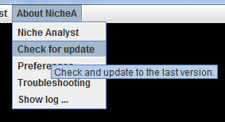

Update NicheA
Using the the menu in Fig.1, you can compare the version on your computer and the latest version on server. Following the steps below, you can update NicheA to the latest version easily.
Figure 1. The menu for checking for update.

In Linux, you can overwrite 'nichea.jar' to update NicheA directly. In Windows you need to re-install the newest NicheA to update it. In Mac OS X, you need to overwrite NicheA.app to update NicheA.
In Windows and Mac OS X, you have another opinion to update NicheA via downloading and overwriting the JAR directly, rather than download a full big installation file. The Jar file for Windows is here, and for Mac OS X is here.
In Windows, you need to go to the folder you installed NicheA (by default "c:\Program Files\Niche Analyst 3.0\"), and overwrite the corresponding JAR file.
In Mac OS X (Assuming you have copy NicheA.app to your Applications folder), open 'Applications' folder, right click ‘NicheA.app’, select ‘Show Package Contents’. Then go to 'Java' folder, copy the downloaded ' nichea.jar' file to this folder and overwrite the existing one.
Before you overwrite the 'nichea.jar' file, we suggest you backup the original one. Once you have any trouble to use the new version, you can go back to a previous version easily.